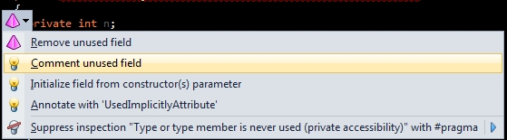

- About the author
- Questions and Issues
- Edit and Contribute
- Introduction
- The ReSharper Platform
- About This Guide
- Key Topics
- Getting Help
-
Part I - Extending the ReSharper Platform
- 1. Getting Started
- 2. Platform Versioning
- 3. What's New?
-
4.
Declarative Extensions
- 4.1. Live Templates
- 4.2. Structural Search and Replace Patterns
-
4.3. External Annotations
- 4.3.1. Attribute Reference
- 4.3.2. Annotator Tool
- 5. Compiled Extensions (Plugins)
- 6. Deployment
- 7. Hints and Tips
- 8. Best Practices
-
Part II - Architectural Overview
- 1. Overview
- 2. Platform
- 3. Project Model
- 4. PSI
- 5. Features
-
6. Products
- 6.1. Standalone
- 6.2. Deployment
-
Part III - Platform
- 1. Logging
- 2. Lifetime
-
3. DataFlow
- 3.1. IViewable
- 3.2. IProperty
- 3.3. ISignal
- 4. Component Model
-
5.
Zones
- 5.1. Implementation
- 5.2. Usage
- 5.3. Features and Products
- 5.4. Activation
- 5.5. Licensing
- 5.6. Troubleshooting
- 5.7. How to Define a Zone Marker
- 5.8. Reference
- 6. DataContext
- 7. TextControl
- 8. Documents
- 9. Threading
- 10. Locks
- 11. Transactions
- 12. IL Metadata
-
13. Shell
- 13.1. Visual Studio integration
- 13.2. Command line
- 13.3. Tool windows
- 13.4. Icons
- 13.5. Tooltips
- 13.6. TreeView
- 13.7. Progress reporting
- 13.8. Popup menus
- 13.9. Extensions
- 13.10. Theming
-
14.
Settings
- 14.1. Reading and writing
- 14.2. Defaults
- 14.3. Layers
- 14.4. File format
- 14.5. Util
-
Part IV - Project Model
- 1. Overview
- 2. Change Manager
- 3. MSBuild Integration
- 4. Project Files
-
Part V - PSI
- 1. Overview
- 2. PSI Languages
- 3. Files and Modules
- 4. Syntax Trees
-
5.
Navigating Syntax Trees
- 5.1. Helper methods
- 5.2. Strongly Typed Navigation
- 5.3. Recursive navigation
- 5.4. Finding nodes
-
6. Manipulating syntax trees
- 6.1. Transactions
- 7. Generating code
-
8.
Declared Elements
- 8.1. Declared Element Types
- 8.2. Declared Element Envoys
-
9.
References
- 9.1. Resolving references
- 9.2. Reference providers
- 9.3. Code Completion
- 9.4. References within elements
- 9.5. Managing reference providers
- 9.6. Path references
- 9.7. Colour references
- 10. Type Systems
- 11. Symbols and Symbol Tables
- 12. Constant Evaluation
- 13. Control Flow Graphs
-
14.
Caching
-
14.1. Persistent Caches
- 14.1.1. Symbol Cache
- 14.1.2. Word Index
- 14.2. Persistent Indexes
- 14.3. Transient Caches
-
14.1. Persistent Caches
- 15. Searching
- 16. Pointers
- 17. External Annotations
- 18. PSI Icons
-
19. PSI Implementations Reference
- 19.1. C#
- 19.2. Visual Basic
- 19.3. JavaScript
- 19.4. TypeScript
- 19.5. JSON
- 19.6. HTML
- 19.7. CSS
- 19.8. Razor
- 19.9. ASP.net
- 19.10. XML and DTD
- 19.11. Build scripts
- 19.12. XAML
- 19.13. XML Doc
-
Part VI - Features
-
1. Analysis
- 1.1. Highlights
- 1.2. Custom Highlights
- 1.3. Suppressing Highlights
- 1.4. Daemons
- 1.5. Element problem analysers
- 1.6. Xml and Html analysers
- 1.7. Solution Wide Analysis
- 1.8. Error Stripe
- 1.9. Gutter Marks
- 1.10. Syntax Highlighting
- 1.11. Caches again
- 1.12. Value Analysis
- 1.13. Call Hierarchy
- 1.14. Testing
-
2.
Actions
- 2.1. Menu items
- 2.2. Quick fixes
- 2.3. Context actions
- 2.4. Bulk actions
- 2.5. Overriding
- 2.6. Temporary editor actions
- 2.7. Action ID reference
-
3.
Code Completion
- 3.1. Basic, smart and import
- 3.2. Dynamic completion
- 3.3. Double completion
- 3.4. Lookup items
-
4. Contextual highlighting
- 4.1. Brace matching
- 4.2. string.Format style highlighting
- 4.3. Find usages in file style highlighting
- 5. Popup docs
-
6.
Refactoring
- 6.1. Workflow
- 6.2. Integrating
- 6.3. Renaming
- 6.4. Unused references
- 7. Generate Menu
-
8.
Navigation
- 8.1. Go to everything
- 8.2. Go to related
- 8.3. Go to next/prev
- 8.4. Contextual - find exits
- 8.5. Navigate from here
- 8.6. Occurrences
-
9.
Options Pages
- 9.1. Search in Options Pages
-
10. Tools
- 10.1. Code cleanup
- 10.2. Code structure
- 10.3. Todo items
- 10.4. Bookmarks
- 10.5. Assembly explorer
-
11. Naming
- 11.1. Suggestions
- 11.2. Policy
-
12. Editing
- 12.1. Formatting
- 12.2. Typing assist
- 12.3. Complete statement
- 12.4. Extend selection
- 12.5. Rearrange code
- 12.6. Comments
-
13. Structural Search and Replace
- 13.1. C# vs HTML and CSS
- 13.2. Programmatic usage
-
14.
Live Templates
- 14.1. Macros
- 14.2. Scopes
- 14.3. Categories
- 14.4. Quick lists
- 14.5. Hotspots
- 14.6. Programmatic usage
-
15.
Unit Test
- 15.1. Test discovery
- 15.2. Test execution
- 15.3. Non-CLR tests
-
16. Diagramming
- 16.1. Architecture diagrams
-
17. External sources
- 17.1. PDB symbols
- 17.2. Decompiling
- 17.3. Source servers
- 18. Asp.net MVC
- 19. Internationalisation
- 20. Working with XML-like files
-
1. Analysis
-
Part VII - Products
- 1. dotPeek
- 2. InspectCode
- 3. Custom products
-
Part VIII - Custom languages
- 1. Overview
-
2. Registering a Custom Language
- 2.1. Project Model
- 2.2. PSI
- 3. Secondary PSI
- 4. Injected PSI
-
5. Building the PSI tree
- 5.1. Lexing
-
5.2. Parsing
- 5.2.1. PsiGen and .psi Files
- 5.2.2. TreeBuilder
- 5.3. Extending Existing Languages
- 5.4. Incremental Parsing
- 6. Creating Declared Elements
-
7. Language Specific Features
- 7.1. Disabling Intellisense
- Published using GitBook
Quick-Fixes and Context Actions
This topic relates to ReSharper 8, and has not been updated to ReSharper 9 or the ReSharper Platform.
One of the ways that ReSharper offers to correct or modify your code is by using a pop-up menu that shows up on the left-hand side of the screen:

This menu (typically triggered with the Alt+Enter shortcut) contains a set of menu items that plugin writers can provide. There are two separate ReSharper constructs that both can provide items to appear in this menu:
- Context actions are simply possible code modifications that might be applicable in a particular point in code. Context actions typically offer a chance to improve the code without dramatically changing it. CA items are displayed with pencil icons.
- Quick-fixes are possible modifications that appear associated with a particular highlighting (i.e., a warning or an error). These typically offer a chance to correct a particular problem in your code. Quick-fix items are displayed with red or yellow light bulb icons (where quick-fixes with red bulbs are meant to fix errors and quick-fixes with yellow bulbs fix warnings, suggestions and hints).
In each case, a context action (CA) or quick-fix (QF) can provide zero or more menu entries for the user to act upon. As of ReSharper 7, these entries can also be hierarchical in nature, i.e. one can have nested/submenu items in addition to top-level ones.
Bulb Action
Each item provided by a QF or CA is called a bulb action. A bulb action is any class that implements the IBulbAction interface. This interface has two members:
Text- this property needs to contain the text that is displayed in the menu item.Execute()- this method is called when the menu item is chosen.
Whether or not to create separate classes for bulb actions (in addition to QF/CA classes) is a design decision. Typically, if your QF or CA only intends to display one item, it may not be necessary.
In addition to ‘plain text’ offered by IBulbAction, your bulb action can also provide rich text, i.e., text that has some formatting. For example:

To support it, your bulb action must also implement the IBulbItemRichText interface. This interface has a property called RichText that contains a definition of the text shown in the menu, including formatting changes such as bold text or a different text colour. Here’s an example:
public RichText RichText
{
get
{
var style = new TextStyle(FontStyle.Bold, Color.Red);
return new RichText("Hello, ").Append("World!", style);
}
}
Check out the TextStyle class for a range of possible options.
Bulb Menu
A bulb menu is a collection of bulb actions provided by various CAs and QFs, all arranged in a particular list or hierarchy. Bulb menus are created internally by ReSharper, but they should be populated explicitly in the QFs and CAs via the CreateBulbItems method.
A bulb menu is represented by the BulbMenu class. The contents of this class can be modified in several ways. The simplest way, if you want to add just one item to the root level of the menu is to call a method such as ArrangeContextAction() or ArrangeQuickFix(). Both of these methods takes one bulb action and puts it at the top level.
A singular call such as ArrangeContextAction() has a corresponding method ArrangeContextActions() - note the s at the end. This basically takes several bulb items and puts them at the top level.
the bulb menu doesn’t just support adding ordinary QF and CA items but also other items, but also more complicated items such as refactoring quick-fixes. The fundamental difference between these is the icon that is displayed next to the item.
Now let’s talk about the hierarchical aspects of menus. Essentially, a bulb menu keeps information about its structure in a property called Groups which is an enumeration of BulbGroup objects. Rather than creating groups, it is recommended that you use the BulbMenu.GetOrCreateGroup() method to avoid creating duplicate groups. This method takes an Anchor which relates to the location where the group is placed - take a look at the static members of AnchorsForBulbMenuGroups for some well-known anchors.
Having acquired or created a group, you can do one of two things:
- Add a single bulb action using the
AddBulbAction()method. This is precisely what happens behind the scenes inArrangeContextAction()and similar methods. - Use the
GetOrCreateSubmenu()method in order to create a submenu for a particular menu.
Hierarchical Menu (a.k.a. Submenu)
This is where an explanation of submenus is in order. You see, one of the properties of a BulbGroup is called MenuItems and it contains, you guessed it, a collection of BulbMenuItems. What happens behind the scenes in the GetOrCreateSubmenu() method is that a new BulbMenuItem is acquired or created and then added to the collection of existing items.
Both the explicit creation of the BulbMenuItem and its addition via GetOrCreateSubmenu() require you to initialize and pass in a BulbMenuItemViewDescription structure. For this structure, you need to define:
- An anchor (as per bulb groups)
- An icon. You can take one of the existing icons in ReSharper or pass
nullto avoid having an icon altogether. - A rich text definition. Use the
RichTextclass or, if you don’t need any formatting, simply cast an ordinary string toRichText.
You’ll also note that the BulbMenuItem constructor has two additional parameters. The bulbAction parameter lets you define a bulb action to execute when this menu item is triggered. The withSubmenu parameter defines whether you need to have a submenu for this menu item. If you do, it initializes the Submenu property of the BulbMenuItem to a new BulbMenu.
Brief recap of the way things are structured:
- You have a top-level
BulbMenuthat you can items directly to. - A
BulbMenuhas one or moreBulbGroupelements in aGroupscollection. - Each group has one or more
BulbMenuItemelements in aMenuItemscollection. - Each
BulbMenuItemcan itself have aSubmenuproperty of typeBulbMenu.
Context Action
As mentioned previously, a context action is meant to offer an opportunity to change code in a particular context. For example, offering to change a number from hexadecimal to decimal should be a context action - this is a convenience method.
A context action is a class that follows the following rules:
- It implements the
IContextActioninterface - It is decorated with the
[ContextAction]attribute - It has a constructor that takes the CA data provider as a parameter
Let’s start with the CA constructor. As mentioned above, it should have one parameter corresponding to a data provider for the context action. The data provider is how we can get information about where the context action is possibly going to be displayed. In other words, it's the context for the context action. The data provider is a language-specific interface derived from IContextActionDataProvider.
Here is an example from a C# context action:
[ContextAction(Description="Foo",Group="C#",Name="Foo", Priority=1)]
public class OrdinaryContextAction : IContextAction
{
private ICSharpContextActionDataProvider dataProvider;
public OrdinaryContextAction(ICSharpContextActionDataProvider dataProvider)
{
this.dataProvider = dataProvider;
}
// ...
}
Now it’s time to implement the interface members. The first, an IsAvailable() method is used to check whether this context action is available. If it is, the CreateBulbItems() method will be called. If not, it's not called, and no items are added for this action. The IsAvailable() method is implemented by looking at the context data provider we were passed in the constructor, and deciding if our action is valid for the current location. There are several properties on the method that are useful, for example, we can get at the current ITextControl, Selection and CaretOffset. More importantly, we can look at the current node in the PSI syntax tree - the SelectedElement property gives us the ITreeNode of the PSI syntax tree at the current caret offset. We can downcast this to a more specific type, such as IMethodDeclaration or IAssignmentExpression. We can also get the tree nodes before and after the caret, using the provider's TokenBeforeCaret and TokenAfterCaret. However, the GetSelectedElement<T> method is most useful, because it will walk up the syntax tree looking for a containing node of the correct type. For example, we can use GetSelectedElement<IMethodDeclaration>(true, true) to get the containing method declaration, even if the node we're currently on is an expression. We can check to see if the value is null to ensure we're in the right place, and we can walk the contents of the method declaration node to look inside the method body or parameters, etc.
public bool IsAvailable(IUserDataHolder cache)
{
return provider.GetSelectedElement<IMethodDeclaration>(true, true) != null;
}
The next interface member is the one that populates the bulb menu. The method is defined as
public void CreateBulbItems(BulbMenu menu)
and the idea is that you use the menu parameter to define the structure of the menu, as described in the previous section. For instance, the implementation can be as simple as
public void CreateBulbItems(BulbMenu menu)
{
menu.ArrangeContextAction(new FooBulbAction());
}
if you’ve only got one bulb action that you want to add.
Quick-Fix
A quick-fix is just like a context action. The only difference is that a quick-fix appears in response to a highlighting. A quick-fix is called this because its purpose is to fix a particular problem, a problem typically found by a daemon and highlighted in code.
The creation of a quick-fix is very similar to the creation of a context action. You need a class that:
- Implements the
IQuickFixinterface - Is decorated with the
QuickFixattribute - Has at least one constructor with one parameter corresponding to a particular highlighting
The constructor parameter that the quick-fix takes must correspond to the highlighting which corresponds to this quick-fix. As far as interface members are concerned, the situation is identical to that of the context action, with the only difference that the CreateBulbItems() method takes an extra parameter indicating the Severity of the associated highlighting.
Note that BulbMenu.ArrangeQuickFixes() requires a set of pairs of bulb actions and severities. Thus, if you keep an internal list of IBulbAction elements, you can convert it to a set of pairs using such code as:
menu.ArrangeQuickFixes(_items.Select(_ => Pair.Of(_, severity)));
Base Classes
In the majority of cases, implementing IBulbAction, IQuickFix or IContextAction is not recommended. Instead, we suggest that you do the following:
- If your QF or CA publishes only a single bulb action, consider inheriting your class from
QuickFixBaseorContextActionBaserespectively. - If you really need to have a separate class for a bulb action, inherit from
BulbActionBase. This class implementsIBulbActionand has a lot of useful plumbing necessary for modifying documents.